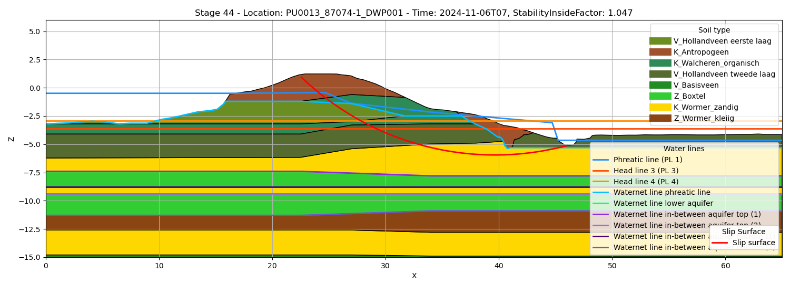

DamLive
DAM (Dike strength Analysis Module) is een rekenprogramma voor berekeningen rondom de sterkte van dijken. Hiermee kunnen fragility curves worden opgesteld maar ook inzicht verkregen worden in de actuele sterkte. Deze software is ontwikkeld voor de waterschappen door Deltares. DamLive bouwt verder op de rekenmodule onder DAM maar wordt gebruikt om met de huidige waterstanden berekeningen uit te voeren. Het is ontworpen op met Delft-FEWS te werken, maar kan ook gebruikt worden met Toolbox Continu Inzicht.
De koppeling met DamLive bestaat uit twee delen: runnen van DamLive en verwerken van de output. Zie ook de notebook in tests\examples\development_notebooks\dam_live voor een volledig voorbeeld van begin tot einds.
Runnen van DamLive
Om DamLive te runnen vanuit de toolbox moet DamLive geïnstalleerd worden. De binaries (bestanden) en licentie moet via Deltares worden verkregen. De zip met binaries kan worden uitgepakt. Deze locatie moet in het .env bestand komen te staan: DAMLIVE_EXE="...\DamLive.exe". Hiermee kan de toolbox zelf damlive op de juiste manier aanroepen. Meer informatie over DamLive is hier te vinden
Installeren
Verifieer of DamLive juist is geïnstalleerd: ...\DamLive.exe --help.
Als dit goed gaat, zou het volgende moeten verschijnen:
DamLive 26.1.0.7015
Copyright © Deltares 2026
ERROR(S):
-d/--damxFile required option is missing.
Usage: damlive[.exe] -d DamXInputFile -i InputTimeSeriesFileName -o
...Deze opzet is getest met DamLive versie 26.1.0.7015.
Configuratie
Om DamLive te gebruiken moet een {project_naam}.damx bestand beschikbaar zijn, dit is uitvoer van een Dam stabiliteit berekening. Ook moet een map met de stix bestanden: {project_naam}.geometries2D waar in het .damx bestand naar wordt verwezen. Deze moeten beide in de root_dir staan. De projectnaam moet meegeven worden in de opties van de configuraties, in het configuratie voorbeeld is project_naam: WV2030_Purmer. De logging van DamLive.exe kan worden terug gegeven aan de gebruiker, dit is in het voorbeeld terug te vinden.
Om DamLive te runnen moeten twee data adapters worden doorgegeven: grondwaterstanden en parameters. De waterstanden moeten voldoen aan het schema voor belastingen, zie ook de module overbelastingen. De parameters zijn specifiek voor DamLive, deze moet bevatten parameter_names en parameter_values. Bij het voorbeeld staan twee smaken: Bishop en UpliftVan, deze zijn vanuit DamLive xml bestanden, maar zijn in de Toolbox Continu Inzicht csv bestanden. In de csv bestanden in het scheidingsteken_, waarbij <CalculationModules><StabilityInside> opgeslagen wordt de parameter naam: CalculationModules_StabilityInside.
De uitvoer van de berekening zijn .stix bestanden, deze kunnen met UpdateDamLive.unzip_damlive_results uitgepakt worden naar een verzameling van .json bestanden. De json bestanden vormen de input voor de functie CombineDamLiveResults hieronder beschreven.
GlobalVariables:
rootdir: "data_sets"
moments: [ 0, 24 ]
calc_time: "2024-11-06 08:00:00"
UpdateDamLive:
DAMLIVE_FILE: 'WV2030_Purmer.damx'
DataAdapter:
default_options:
csv:
sep: ","
waterstanden_xml_uur:
type: xml_timeseries
path: "waterstanden_fews_hourly.xml"
parameters_bishop_csv:
type: csv
index: True
path: "parameters_bishop.csv"
# of
parameters_uplift_csv:
type: csv
index: True
path: "parameters_uplift.csv"
output_file:
type: csv
path: test.csvfrom toolbox_continu_inzicht import Config, DataAdapter
from toolbox_continu_inzicht.dam_live import UpdateDamLive
config = Config(config_path="config.yaml")
config.lees_config()
data_adapter = DataAdapter(config=config)
update_dam_live = UpdateDamLive(data_adapter=data_adapter)
# om meer informatie terug te krijgen van DAMLIVE, kan de logging level op INFO/DEBUG worden gezet.
update_dam_live.data_adapter.set_global_variable("logging", {"level": "INFO"})
update_dam_live.data_adapter.init_logging(re_initialize=True)
update_dam_live.run(
input=["waterstanden_xml_uur", "parameters_bishop_csv"], output="output_file"
)
update_dam_live.unzip_damlive_results()Verwerken output
Met de uitgepakte .stix bestanden zijn een verzameling van json bestanden. Deze kunnen met de functie CombineDamLiveResults gecombineerd worden tot 3 tabellen. Als de root_dir goed staat naar de uitgepakte stix map, dan is de onderstaande configuratie voldoende. Een uitzondering is het kleuren schema, deze kan een map hoger dan de stix bestanden worden geplaatst. Hier kan een mapping worden gemaakt met de kollomen: type,name,color, om het figuur weer te geven. Deze tabellen kunnen direct worden gevisualiseerd met CombineDamLiveResults.plot_stage of opgeslagen en later worden getoond. Een voorbeeld hier van is het volgende figuur:

GlobalVariables:
rootdir: "data_sets/unpacked_stix_file"
DataAdapter:
scenario:
type: stages
path: scenarios
geometries:
type: geometries
path: geometries
soillayers:
type: soillayers
path: soillayers
soils:
type: soils
path: soils.json
waternets:
type: waternets
path: waternets
calculationsettings:
type: calculationsettings
path: calculationsettings
colors:
type: csv
relative_file: data_sets/colors.csv
merge_soil:
type: csv
path: merged_soil.csv
merge_waternet:
type: csv
path: merged_waternet.csv
merge_calculations:
type: csv
path: merged_calculations.csvfrom toolbox_continu_inzicht import Config, DataAdapter
from toolbox_continu_inzicht.dam_live import CombineDamLiveResults
config = Config(config_path="config.yaml")
config.lees_config()
data_adapter = DataAdapter(config=config)
combine_damlive_results = CombineDamLiveResults(data_adapter=data_adapter)
combine_damlive_results.run(
input=[
"scenario",
"geometries",
"soils",
"soillayers",
"waternets",
"calculationsettings",
"colors",
],
output=["merge_soil", "merge_waternet", "merge_calculations"],
)
# optioneel
stage_id = list(combine_damlive_results.df_merged_soils.stage_id.unique())
fig, ax = combine_damlive_results.plot_stage(
stage_id=int(stage_id[0]),
xlim=(0, 65),
ylim=(-15, 6),
)